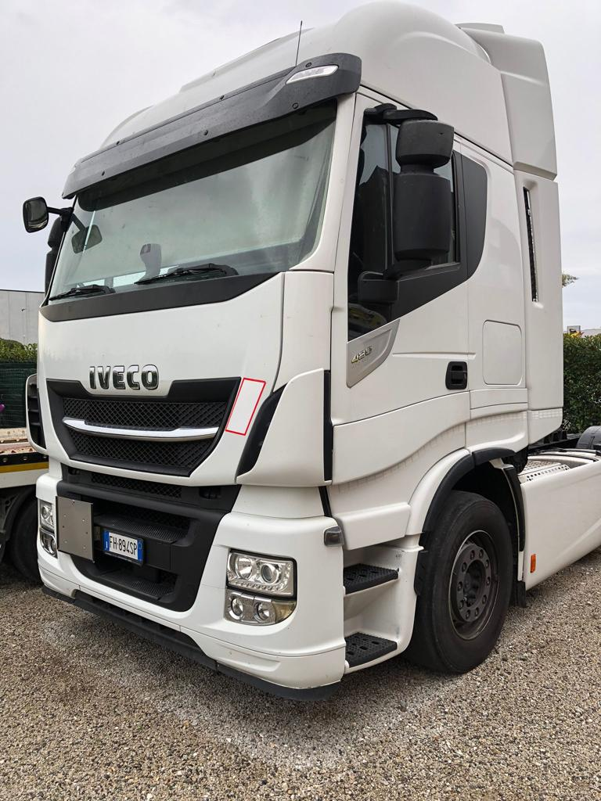

S.C. Trucks S.A.S.
di Chiarugi Sara & C.
Azienda impegnata nel settore del trasporto di cose per conto terzi
Telefono : (+39) 0587 734706
Fax : (+39) 0587 734706
E-mail : sctruckssas@gmail.com
P. IVA : 02188510503
Telefono : (+39) 0587 734706
Fax : (+39) 0587 734706
E-mail : sctruckssas@gmail.com
P. IVA : 02188510503
Cenni storici
L'azienda, con sede in Via Gabbiano 62 a Ponsacco (PI) 56038, nasce nel 2015 e diventa operativa ad inizio 2016. Iscritta all'Albo Trasportatori italiano con matricola ITP026301.
In relazione all'adempimento di cui alla L. 124/2017, la nostra società Sctrucks Sas ha ricevuto nel corso dell'anno 2021, Aiuti di Stato pubblicati sul Registro Nazionale Aiuti di Stato - RNA Sezione Trasparenza.
Galleria
